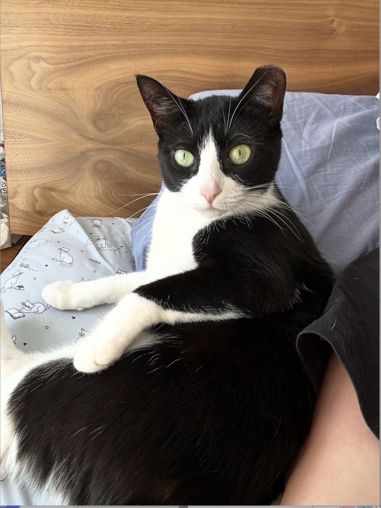
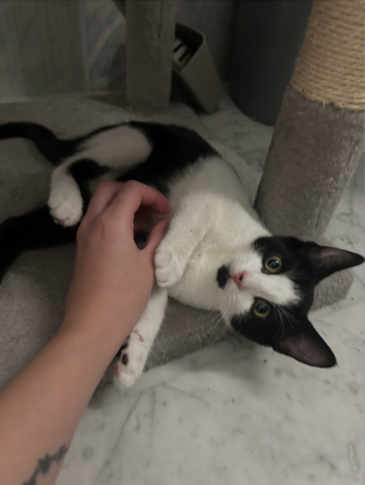
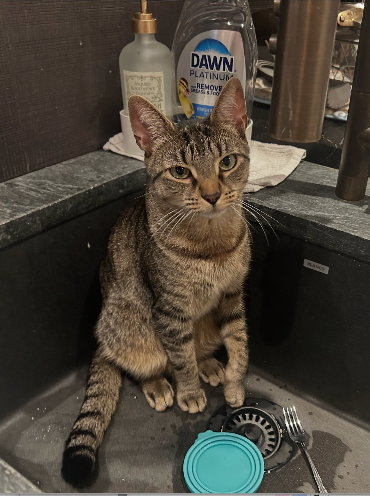
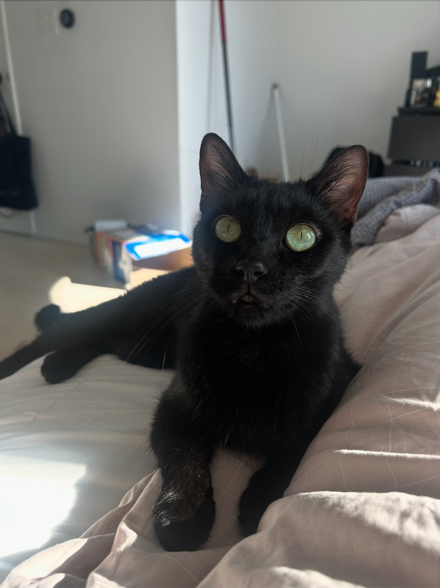

Meet Our Cats
All of our cats are spayed or neutered, microchipped, and vaccinated before adoption. We get new cats regularly, so check back often!

Luna
Age: 2 • Breed: Domestic Shorthair • Color: Black and white
Luna is a quiet and curious cat. She warms up quickly and loves cozy nap spots. She is great for a calm household.

Mochi
Age: 1 • Breed: Domestic Shorthair • Color: Black and white
Mochi is young and playful. She loves belly rubs and does best with another cat to keep her company.

Chester
Age: 3 • Breed: Domestic Shorthair • Color: Brown tabby
Chester is a curious and confident cat. He loves exploring every corner of the house, including the kitchen sink.

Theodore
Age: 2 • Breed: Domestic Shorthair • Color: Black
Theodore is a sleek and relaxed cat with striking green eyes. He loves lounging in sunny spots and gentle attention.